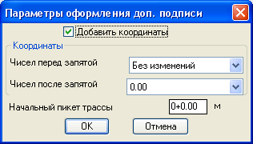

оманда: draw_add_picket_be_trace
оманда: draw_add_picket_be_trace¬ычисл€ет пикет и координаты точки на трассе
Ќастройки св€заны с соответсвующими в кнопке ќформление трассы.
оманда: draw_add_picket_be_trace
 ¬ыберите 2D полилинию оси трассы:
¬ыберите 2D полилинию оси трассы:
 ”казывает объект типа двухмерна€ полилини€
”казывает объект типа двухмерна€ полилини€
”кажи определ€емую точку:
”казывает точку на выбранной полилинии у которой надо определить пикет и возможно координаты

¬ыбирает в по€вившемс€ диалоговом окне в каком виде должен быть вставл€емый пикет
“очность пикетов - определ€ет точность, количество знаков после зап€той, в выноске.
ƒобавить координаты - добавл€ет в подпись пикета вид которых задаетс€ ниже.
„исел перед зап€той - часто число координаты содержит шестизначные числа в этом раскрывающемс€ списке можно указать ограничение до скольки чисел перед зап€той следует выводить координаты.
„исел после зап€той - определ€ет точность выводимых координат, до: метров, дециметров, сантиметров или милиметров.
Ќачальный пикет трассы - ћожно вводить первый пикет как 13+29.20 так и 1329.20.